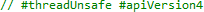
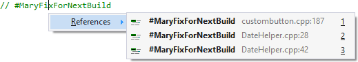

VA Hashtags
VA Hashtags is a combination of named bookmarks and task manager. Create a VA Hashtag by placing the hash character # in front of a word or un-spaced phrase within a comment.

Use a dedicated tool window (Shift+Alt+H) to browse all VA Hashtags, or use Goto Related (Shift+Alt+G) to find other references to any one VA Hashtag.
